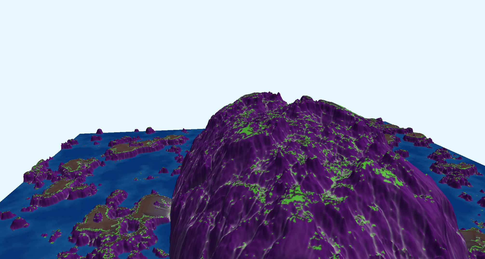
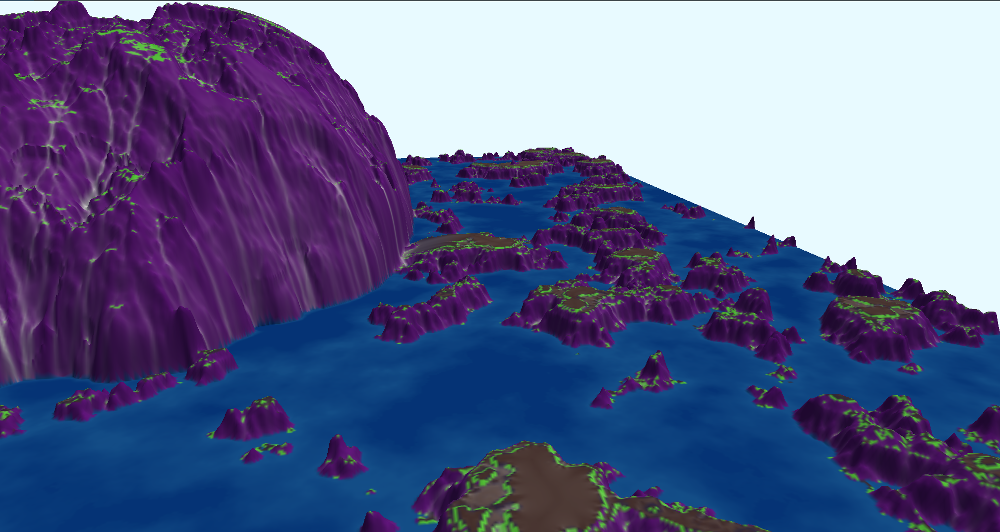
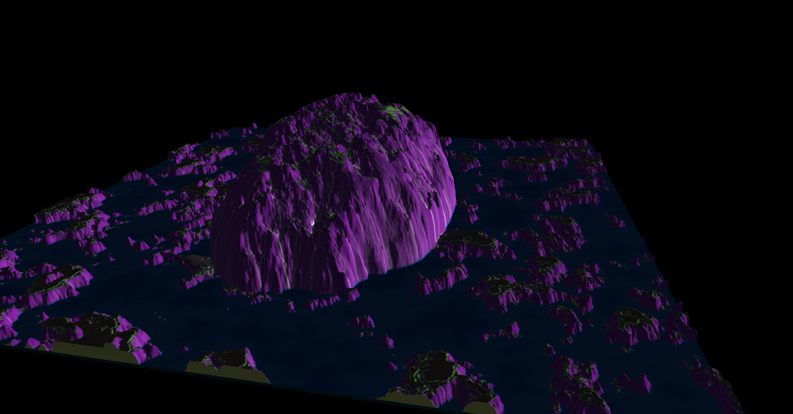
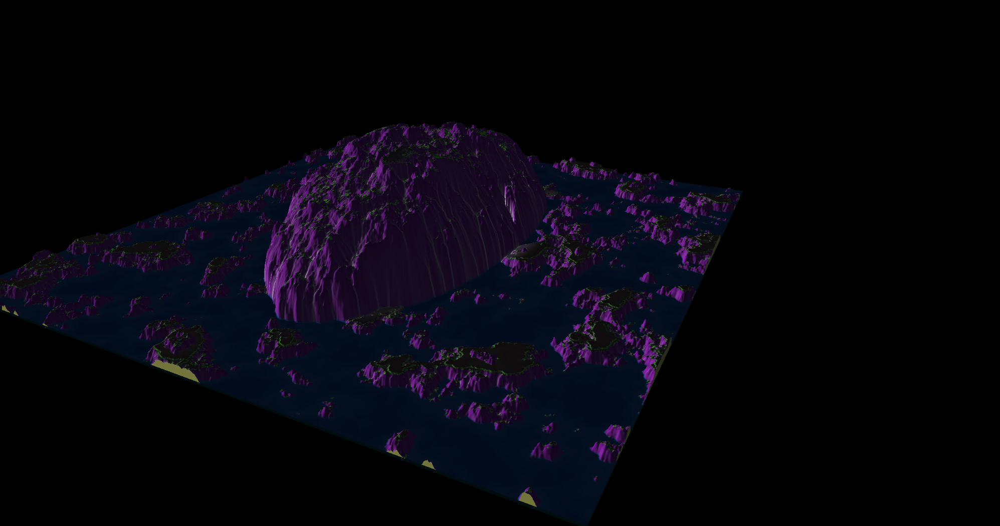
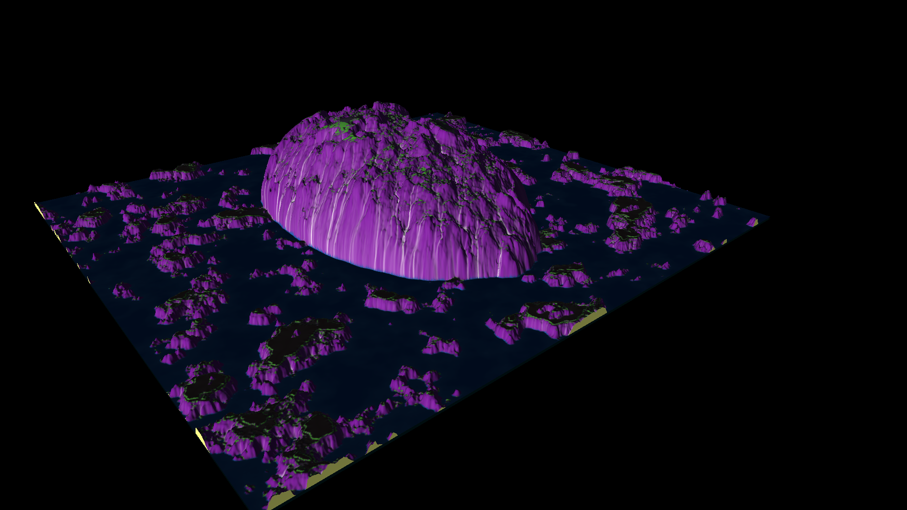
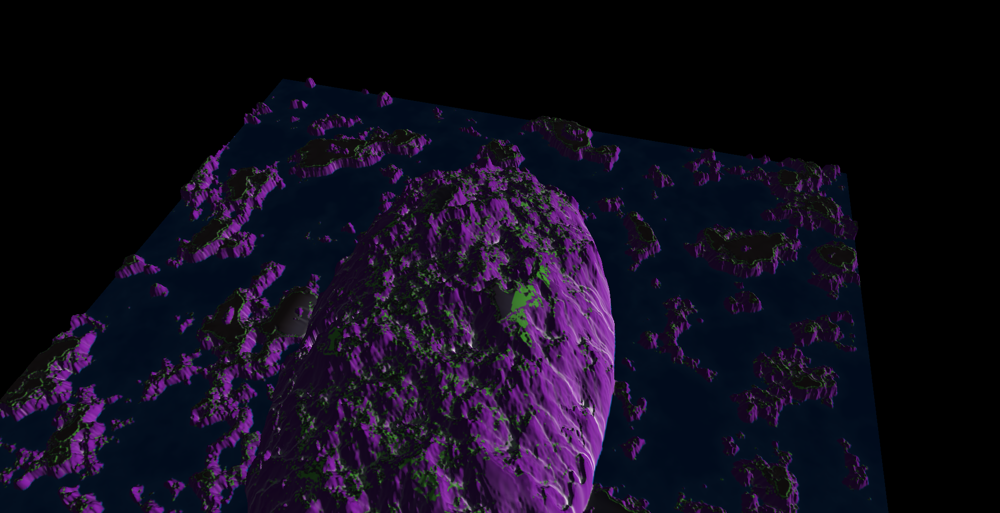

Planet S34T






This is terrain I made in Unreal Engine, which is a game designer engine. As a child learning about the moon landing mission I could only imagine the kinds of planets we can uncover and go to.I created this terrain with my sole imagination as a child of how a planet could possibly look in another universe. I know for a fact that most pictures of planets or galaxies we see online are mostly renders. So I wanted to render what I used to imagine as a child. A frightening looking planet where one could possibly only think to see in a sci-fi horror movie. To me thinking and drawing planets was the only thing I found interest in as a child. So I guess rendering them in a game designer engine is no different.